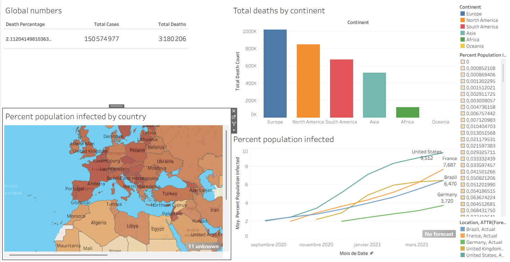

Data Analytics & Business Intelligence
- Power BI (Power Query ETL, DAX, Dataviz)
- Tableau
- Excel avancé
- Google BigQuery
- PostgreSQL
- MySQL
- Modélisation dimensionnelle (Star Schema)
- Suivi de KPIs
> Bonjour, je suis Ilyas
Je conçois des pipelines de données fiables, développe des tableaux de bord BI à fort impact décisionnel et intègre des modèles d'IA appliquée en production — en traduisant la complexité technique en leviers métier.
Recherche contrat d'alternance 2026 – 2028 | Rythme : 2 semaines / 2 semaines | Basé à Lyon (Mobile & Ouvert au Télétravail)
01. À propos
Titulaire d'une Licence Informatique et en entrée de Master Data & Intelligence Artificielle, je combine des fondamentaux solides en génie logiciel (SQL, Python, API, Docker, Linux) avec la Business Intelligence (Power BI, Tableau) et des pipelines de Machine Learning appliqué.
Mon expérience de formateur m'a appris à écouter, reformuler et vulgariser : je sais traduire un besoin métier en spécification technique, puis restituer des résultats chiffrés de façon claire aux décideurs.
Objectif court terme
Alternance 24 mois — Data / BI / IA
Évolution visée
Data Analyst · BA / SI · Data Engineer · MLOps Junior
Langues
🇫🇷 Français (Courant) · 🇬🇧 Anglais (Courant / Expérience en enseignement)
02. Compétences
De la collecte de la donnée à sa mise en production, en passant par l'analyse et la restitution.
03. Projets
Ingénierie de données, BI et temps réel — chaque projet répond à une question concrète.

Pipeline backend automatisé qui collecte, nettoie et normalise en continu des flux de données de marché en temps réel avec stockage structuré.

Extraction, agrégation massive et visualisation des indicateurs sanitaires et de vaccination à l'échelle internationale.

Synchronisation de la vidéo, du chat et d'une playlist collaborative entre plusieurs utilisateurs simultanés, grâce à une architecture temps réel basée sur WebSocket.
04. Expérience
Immersion au sein d'une équipe technique : développement logiciel, automatisation des tâches récurrentes et administration d'environnements serveurs.
Atout en entreprise : des bases opérationnelles (Linux, scripting, environnements serveurs) directement mobilisables pour industrialiser des pipelines de données.
Accompagnement d'élèves aux profils variés : diagnostic des besoins, adaptation du discours et transmission de notions complexes de façon claire et progressive.
Atout en entreprise : faire le pont entre équipes métier et techniques, présenter des dashboards aux décideurs et former les utilisateurs finaux aux nouveaux outils data.
05. Contact
Disponible pour la rentrée 2026, sur 24 mois, au rythme 2 semaines entreprise / 2 semaines formation. Échangeons sur vos besoins !
linkedin.com/in/votre-profil
GitHub
github.com/votre-pseudo
Localisation
Lyon, France — Mobile & ouvert au télétravail